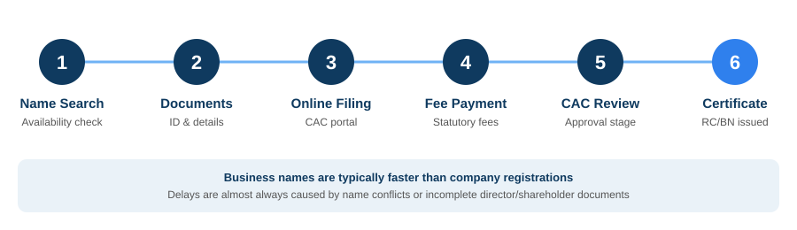

If you're running a business in Nigeria, whether that's a shop, an online store, a consultancy, or a growing company, registering with the Corporate Affairs Commission is the step that makes it real. It's what turns "a thing I do to make money" into a legal entity that can open a corporate bank account, sign contracts, bid for tenders, and be trusted by customers and partners who ask, reasonably, "are you registered?"
This guide covers what CAC registration actually involves: the three main structures available to you, the process from start to finish, and what changes once your certificate lands in your inbox.
What is CAC registration, really?
The Corporate Affairs Commission is the federal body that registers and regulates businesses under the Companies and Allied Matters Act (CAMA) 2020. Registering with the CAC gives your business a legal identity separate from you as an individual.
That separation matters more than people expect. Without it, every debt your business owes is legally your personal debt too. Every contract dispute is yours to fight alone, with no corporate shield between the business and your personal assets. A registered business, particularly a limited company, changes that picture entirely.
Choosing the right structure
Most first-time registrants are choosing between three options, and picking the wrong one is one of the most common (and most expensive to fix) mistakes people make.
Business Name is the simplest and cheapest route. It suits sole proprietors, freelancers, and small traders who want a registered name without the compliance load of a company. Here's the catch: a business name isn't a separate legal entity from its owner. You're still personally on the hook for whatever the business owes.
Private Limited Company (Ltd) creates a genuinely separate legal entity. This is the standard structure for startups, growing SMEs, and anyone planning to raise investment, bring in co-founders, or simply sleep better knowing personal and business liability are separate. It comes with more ongoing obligations than a business name (annual returns, statutory registers, and eventually audited accounts), but it's what banks, investors, and larger corporate clients expect to see before they'll do serious business with you.
Incorporated Trustees is built for NGOs, foundations, religious bodies, and other not-for-profit associations. It has its own registration path, including a published notice of intent to incorporate, and a governance structure built around trustees rather than directors and shareholders.
| Structure | Best for | Personal liability | Ongoing compliance |
|---|---|---|---|
| Business Name | Sole traders, freelancers | You're personally liable | Minimal (annual return) |
| Limited Company | Startups, SMEs, multi-shareholder businesses | Limited to the company | Annual returns, registers, PSC filing |
| Incorporated Trustees | NGOs, foundations, faith-based bodies | Held by the trustee board | Annual returns, trustee reporting |
If your business has foreign shareholders or investment coming in, a Limited Company is required, and you'll usually need NIPC (Nigerian Investment Promotion Commission) registration running alongside your CAC filing. These two go hand in hand for foreign-owned entities, so budget time for both rather than treating CAC as the finish line.
The registration process, step by step

- Name availability search and reservation. You propose a name, usually with one or two backups, and the CAC checks it isn't already taken or confusingly close to an existing one. Once it clears, the name is held for you while you complete the rest of the filing.
- Document preparation. This differs by structure but generally covers valid ID for the proprietor, directors, or trustees, passport photographs, proof of address, and (for companies) shareholder details, share allocation, and registered office address.
- Online filing. Everything runs through the CAC's online portal. There's no need to visit a CAC office in person for a standard registration.
- Payment of statutory fees. Fees vary by structure and, for companies, by share capital. These are set by CAC gazette and have shifted more than once in recent years, so it's worth confirming the current fee schedule directly rather than trusting a number from somewhere online. We can confirm the exact current figure for your structure when you reach out.
- Review and approval. Once documents are submitted and fees paid, the CAC reviews the filing. Business names typically clear faster than companies. Companies take longer if any documentation needs correcting, which is where most delays actually come from.
- Certificate issuance. On approval, you get your digital Certificate of Incorporation (companies) or Certificate of Registration (business names), carrying your unique CAC registration number.
Most registration delays aren't about the CAC being slow. They're about a name conflict or an incomplete director document that could have been caught before filing.
What changed recently: your CAC number now doubles as your tax ID
Under Nigeria's new tax administration framework, which took effect from January 2026, a registered business's CAC registration number automatically serves as its Tax Identification Number, through CAC's integration with the tax authority. That removes a step that used to require a separate trip to register with the tax authority after incorporation. Your TIN now arrives bundled with your CAC certificate instead of being a follow-up errand.
Companies also need to keep the Persons with Significant Control (PSC) requirement under CAMA 2020 on their radar. Anyone who owns or controls a meaningful stake in the company (25% is the commonly used threshold) has to be disclosed to the CAC's beneficial ownership register, and any change in control needs reporting within the statutory window. This isn't a box you tick once at incorporation and forget. It's a standing obligation.
After you're registered: what actually comes next
Getting your certificate is the start of your compliance obligations, not the end of them. Depending on your structure, you'll need to stay on top of:
- Annual returns. A yearly filing confirming your business or company is still active. Miss this consistently and your entity can be struck off the register entirely.
- Statutory registers. For companies, that means registers of members, directors, and (where relevant) charges.
- Your first AGM and auditor appointment. Required for companies within a specific window after incorporation.
- Keeping the CAC updated on any change: registered address, directors, shareholding, or significant control.
- Opening a corporate bank account. This needs your certificate and registration number, and it's usually the first practical thing businesses do once they're registered.
A registered business that never files an annual return is, on paper, indistinguishable from an abandoned one. The certificate alone doesn't protect your standing. What you do after it counts just as much.
Common mistakes worth avoiding
- Picking a name that's too generic, or too close to an existing registered name, which gets it rejected at the search stage before you've even started.
- Registering as a business name when a limited company would actually serve you better, especially if funding or partners are somewhere on your roadmap.
- Treating the certificate as the finish line and getting blindsided by the compliance calendar that follows.
- Using informal "agents" who promise unrealistic timelines or ask for payment outside official channels. If a filing is taking three days when it should take three weeks, that's worth questioning, not celebrating.
Frequently asked questions
Can I register a business name and later convert it to a limited company?
Yes. It's a common path as businesses grow, though the conversion is a separate filing with its own documentation, not an automatic upgrade. Planning for it early saves you a rename headache later.
Do I need a lawyer to register with the CAC?
No, but you do need someone who knows the process well enough to avoid the document errors that cause rejections and delays. That can be a lawyer, an accredited agent, or a firm like ours that handles the filing directly.
What happens if I don't file annual returns?
Consistently missing them puts your business at risk of being struck off the register, which effectively dissolves it. Reinstating a struck-off entity is more expensive and slower than simply staying current.
Getting registered without the guesswork
Whether you're registering a business name for the first time or incorporating a limited company with multiple shareholders, having someone handle the filing accurately the first time saves you the cost and delay of a rejected application. Awal Global Consults manages CAC registration end-to-end: structure advice, document preparation, filing, and guidance on exactly what to do once your certificate lands, so you can get back to running the business.
Need help with this?
Awal Global Consults handles CAC registration end-to-end, from name reservation to your certificate of incorporation, plus the compliance guidance that comes after.